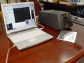

巴山秀才2004-02-14 22:043.56 分
操作性 4.00功能性 4.50美观性 4.00趣味性 4.00耐用性 4.00性价比 2.50解像力 5.00色彩还原 0.50
1010202080502003-04-08 11:214.5 分
操作性 4.50功能性 5.00美观性 4.00趣味性 4.50耐用性 4.00性价比 4.50解像力 5.00色彩还原 4.50

哈娜斯2003-03-22 01:184.56 分
操作性 4.50功能性 4.50美观性 4.50趣味性 4.00耐用性 4.50性价比 4.50解像力 5.00色彩还原 5.00